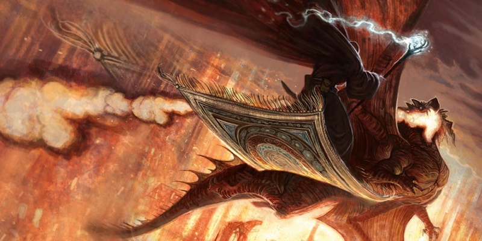

Expériences de MD et joueur
Entre autres choses, D&D est un équilibre créatif entre MD et joueurs. Après avoir joué quelques parties, je me suis rendu compte que je commençais à réfléchir au type d’expérience que souhaitaient vraiment mes joueurs. Ce processus a influencé mes actions en tant que MD et m’a inspiré pour obtenir deux modes de base pour diriger mes parties, rendant l’ensemble de cette expérience bonne pour mes joueurs. Si vous êtes un nouveau MD, ces modes pourront vous aider à délivrer pour vos joueurs cette expérience amusante dont tous les MD ont envie.
Un grand pouvoir implique bla bla bla…
C’est vrai, cependant. Être MD est une responsabilité. Je me sens responsable devant mes joueurs. Je souhaite qu’ils passent un bon moment et apprécient l’histoire, qu’il s’agisse d’une aventure pré-écrite ou d'une que j’ai conçue pour eux. Je veux qu’ils ressentent toutes les frondes et les flèches d’un destin insensé alors qu’ils tracent leur chemin vers la victoire ou la mort.
Au début de ma carrière de MD, j’ai remarqué que certains joueurs étaient attristés quand leur personnage mourrait ou que d’autres joueurs se retiraient et commençaient à jouer à d’autres choses au milieu de la partie. Que souhaitaient ces joueurs que je ne leur donnais pas ? Des visages attristés et un manque d’engagement sont des anathèmes pour un MD. Mais de ces deux réactions proviennent mes deux modes de jeu.
Chaque groupe de joueurs a une ambiance générale. Je mesure quel genre d’expérience mon groupe souhaite vivre. Après une petite discussion, je connais généralement exactement ce à quoi ils sont d’humeur. Dans mon univers, cela se décompose en « Cinématique » ou « MD au naturel ». J’ai conscience que ces modes existent sous d’autres formes dans le multivers du jdr, mais c’est ma façon de faire. Si vous les appréciez, essayez-les.
Mode « Cinématique »
Parfois, tout le monde vient de revoir la version longue du Seigneur des Anneaux et tous les joueurs sont gonflés à bloc pour vivre une expérience où ils sont les héros de l’histoire, combattant le mal suprême. Ils veulent faire des choses extraordinaires comme se balancer sur un lustre pour atterrir dans un saladier en argent tout en coupant des têtes d’orcs. Ils souhaitent vivre un rêve fantastique. Dans ce mode, je porte la casquette de réalisateur de films. Je ne veux pas que les personnages meurent, ce sont les stars du film. La menace de la mort peut être présente mais au lieu de mourir, je choisis de les assommer et de les faire se réveiller dans une situation plus dangereuse encore. Par exemple, imaginez qu’un orc touche Rowena à la tête avec un coup qui l’aurait normalement tuée sur le champ dans un jeu normal. A la place, elle tombe inconsciente et se réveille avec 5 pv, ligotée comme un rôti, et est descendue lentement dans le Puits des Hurlements Mortels. C’est la pénalité de la mort mais sans la mort réelle. L’histoire ne s’arrête pas pour le personnage ou le joueur. A la place, l’amusement continue sous une autre forme et le joueur est toujours dans le jeu, cherchant le moyen de sauver le personnage de ce nouveau péril. Le mode cinématique consiste à créer un fantastique film ensemble, joueurs et MD.
Ce mode est également très amusant. Vous pouvez laisser les joueurs élaborer les personnages les plus fous et faire des choses outrageuses pour choquer ou horrifier les autres. Quand les joueurs souhaitent vivre ce genre d’expérience, mon but est d’essayer de nourrir le feu et de leur fournir une scène renforçant l’idiome de chaque personnage. Par exemple, un joueur peut interpréter un personnage qui est un monstre de cirque cannibale. Je trouverais un moyen de lâcher ce personnage dans un environnement civilisé, tel qu’un bal costumé dans un domaine ancestral, pour augmenter le choc. C’est amusant d’essayer de voir comment ces personnages vont être interprétés (ou non) dans des situations de malaise qui peuvent virer au chaos.
Les jeux cinématiques stupides sont un de mes plaisirs coupables, l’équivalent en jeu de rôle d’une nuit de films d’horreur de série B. Je donne aux personnages et aux joueurs quelque chose de scandaleusement amusant à faire. Les règles normales du mode cinématique aident à maintenir les personnages en vie, et s'ils venaient à mourir, la fin serait parfaite pour le personnage. Peut-être que le monstre de cirque cannibale serait mangé par un monstre errant également cannibale ? C’est une pochette surprise de bizarrerie.
En conclusion, le mode cinématique met en avant une histoire merveilleuse et excitante, tout en évitant la mort des personnages pour que les joueurs restent dans le jeu.
Mode « MD au Naturel »
Parfois, les joueurs sont attirés par un genre d’expérience différent. Ils souhaitent s’approcher de la réalité au maximum de ce qu’un monde fantastique permet. Dans ce format, je ne pousse pas, je simule simplement la nature. La nature se moque de savoir que vous n’avez pas emporté de nourriture pour votre traversée de l’antarctique. La nature vous tue dans ce genre de circonstances, même si vous avez les plus nobles intentions ou une quête à accomplir.
Les joueurs trouvent souvent ce mode palpitant, comme un test constant de leurs compétences tactiques et de roleplay. Par exemple, le groupe peut entrer dans un énorme hall et entendre le claquement des portes, verrouillées magiquement. Des grenades fumigènes sont lancées alors que des archers invisibles dispersent des volées de flèches. Le groupe réagit alors que des gobelins sautent du plafond et arrivent de partout en criant « lâchez les worgs ! » en approchant. Dans ce mode, j’interprète les monstres de façon « réaliste ». Ils veulent survivre au moins autant que les personnages. Je ne donne aucun coup de pouce aux joueurs, restant impassible et totalement neutre quel que soit le résultat. Si les personnages survivent, les joueurs auront des motifs de satisfaction sachant qu’aucune aide ou faveur ne leur aura été accordée. Chaque point d’expérience aura été durement gagné. Chaque pièce d’or est une victoire.
Certains joueurs adorent ce mode. Cependant, d'autres pensent l’aimer juste pour se rendre compte au final qu’ils le détestent farouchement. Si vous n’êtes pas prudent, vous briserez les rêves fantastiques de ces joueurs. Ils viennent de leur vie normale pour se sentir comme des héros et vivre une histoire extraordinaire… et vous avez jeté une couverture mouillée de « réalité » sur leur échappatoire.
Concevoir les modes
Lorsque je remarque des signes de tristesse chez mes joueurs, j’évite le réalisme du mode « MD au naturel » et m’oriente directement vers le mode cinématique. Un bon combat avec de l’action héroïque redonne normalement le sourire aux joueurs. J’ai remarqué qu’il est rarement discordant de passer du mode « MD au naturel » au mode cinématique, même en un instant, alors que l’inverse peut confondre les attentes des joueurs.
Soyez prudent également de ne pas vous focaliser uniquement sur ce que les joueurs veulent, cependant. Parfois, vous voulez seulement diriger un monde où vous, en tant que MD, êtes indifférent à ce que les autres peuvent attendre. En dirigeant votre partie comme vous l’aimez, les joueurs doivent faire l’effort de s’adapter à vous. Cela peut être particulièrement sympa si vous devenez un MD connu pour votre style particulier, créant la sensation que vous avez votre propre façon de diriger une partie et sachant que les joueurs veulent jouer dans vos parties. Mais dans les moments où vous sentez que les choses se détériorent, il peut être utile de réfléchir au mode vers lequel vous vous êtes instinctivement tourné et penser à utiliser le mode alternatif pour faire revenir les joueurs si leur intérêt est en berne.
Nouveaux joueurs
Avec de nouveaux joueurs, j’utilise par défaut le mode cinématique. Laisser les personnages vivre le rêve fantastique, tuer du gobelin et de l’orc, ou sauver le village d’imbéciles déraisonnables. Les laisser boire de la bière mousseuse, faire un bras de fer avec un lourdaud chevelu ou mettre un coup de tête à une vache. Tout est bon, d’autant plus si personne ne meurt.
Si je dirige une partie en mode « MD au naturel », je préviens les nouveaux joueurs que la mort viendra. Certains joueurs doivent s’ajuster émotionnellement pour envisager la possibilité que leur personnage ne meure. D’autres n’accepteront jamais bien la mort de leur personnage, surtout si les joueurs vivent à travers ou essaient d’incarner leur personnage.
Dans tous les cas, déterminez ce que vos joueurs veulent. Essayez ces deux modes différents de mener une partie et évaluez votre ressenti ainsi que celui de vos joueurs. Et amusez-vous à faire vivre des histoires et bâtir des univers.

Écrit par Adam Lee, traduit par pouish